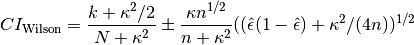
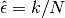
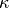
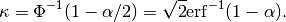
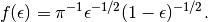
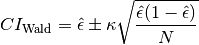

binom_conf_interval¶
-
astropy.stats.binom_conf_interval(k, n, conf=0.68269, interval='wilson') [edit on github][source]¶ Binomial proportion confidence interval given k successes, n trials.
Parameters: k : int or numpy.ndarray
Number of successes (0 <=
k<=n).n : int or numpy.ndarray
Number of trials (
n> 0). If bothkandnare arrays, they must have the same shape.conf : float in [0, 1], optional
Desired probability content of interval. Default is 0.68269, corresponding to 1 sigma in a 1-dimensional Gaussian distribution.
interval : {‘wilson’, ‘jeffreys’, ‘flat’, ‘wald’}, optional
Formula used for confidence interval. See notes for details. The
'wilson'and'jeffreys'intervals generally give similar results, while ‘flat’ is somewhat different, especially for small values ofn.'wilson'should be somewhat faster than'flat'or'jeffreys'. The ‘wald’ interval is generally not recommended. It is provided for comparison purposes. Default is'wilson'.Returns: conf_interval : numpy.ndarray
conf_interval[0]andconf_interval[1]correspond to the lower and upper limits, respectively, for each element ink,n.Notes
In situations where a probability of success is not known, it can be estimated from a number of trials (N) and number of observed successes (k). For example, this is done in Monte Carlo experiments designed to estimate a detection efficiency. It is simple to take the sample proportion of successes (k/N) as a reasonable best estimate of the true probability
 . However, deriving an accurate confidence
interval on is non-trivial. There are several
formulas for this interval (see [R30]). Four intervals are implemented
here:
. However, deriving an accurate confidence
interval on is non-trivial. There are several
formulas for this interval (see [R30]). Four intervals are implemented
here:1. The Wilson Interval. This interval, attributed to Wilson [R31], is given by

where  and  is the number of standard deviations corresponding to the desired confidence interval for a normal distribution (for example, 1.0 for a confidence interval of 68.269%). For a confidence interval of 100(1 -
 )%,
)%,
2. The Jeffreys Interval. This interval is derived by applying Bayes’ theorem to the binomial distribution with the noninformative Jeffreys prior [R32], [R33]. The noninformative Jeffreys prior is the Beta distribution, Beta(1/2, 1/2), which has the density function

The justification for this prior is that it is invariant under reparameterizations of the binomial proportion. The posterior density function is also a Beta distribution: Beta(k + 1/2, N - k + 1/2). The interval is then chosen so that it is equal-tailed: Each tail (outside the interval) contains
/2 of the posterior probability, and the interval
itself contains 1 - . This interval must be
calculated numerically. Additionally, when k = 0 the lower limit
is set to 0 and when k = N the upper limit is set to 1, so that in
these cases, there is only one tail containing /2
and the interval itself contains 1 - /2 rather than
the nominal 1 - .3. A Flat prior. This is similar to the Jeffreys interval, but uses a flat (uniform) prior on the binomial proportion over the range 0 to 1 rather than the reparametrization-invariant Jeffreys prior. The posterior density function is a Beta distribution: Beta(k + 1, N - k + 1). The same comments about the nature of the interval (equal-tailed, etc.) also apply to this option.
4. The Wald Interval. This interval is given by

The Wald interval gives acceptable results in some limiting cases. Particularly, when N is very large, and the true proportion
is not “too close” to 0 or 1. However, as the
later is not verifiable when trying to estimate ,
this is not very helpful. Its use is not recommended, but it is
provided here for comparison purposes due to its prevalence in
everyday practical statistics.References
[R30] (1, 2) Brown, Lawrence D.; Cai, T. Tony; DasGupta, Anirban (2001). “Interval Estimation for a Binomial Proportion”. Statistical Science 16 (2): 101-133. doi:10.1214/ss/1009213286 [R31] (1, 2) Wilson, E. B. (1927). “Probable inference, the law of succession, and statistical inference”. Journal of the American Statistical Association 22: 209-212. [R32] (1, 2) Jeffreys, Harold (1946). “An Invariant Form for the Prior Probability in Estimation Problems”. Proc. R. Soc. Lond.. A 24 186 (1007): 453-461. doi:10.1098/rspa.1946.0056 [R33] (1, 2) Jeffreys, Harold (1998). Theory of Probability. Oxford University Press, 3rd edition. ISBN 978-0198503682 Examples
Integer inputs return an array with shape (2,):
>>> binom_conf_interval(4, 5, interval='wilson') array([ 0.57921724, 0.92078259])
Arrays of arbitrary dimension are supported. The Wilson and Jeffreys intervals give similar results, even for small k, N:
>>> binom_conf_interval([0, 1, 2, 5], 5, interval='wilson') array([[ 0. , 0.07921741, 0.21597328, 0.83333304], [ 0.16666696, 0.42078276, 0.61736012, 1. ]])
>>> binom_conf_interval([0, 1, 2, 5], 5, interval='jeffreys') array([[ 0. , 0.0842525 , 0.21789949, 0.82788246], [ 0.17211754, 0.42218001, 0.61753691, 1. ]])
>>> binom_conf_interval([0, 1, 2, 5], 5, interval='flat') array([[ 0. , 0.12139799, 0.24309021, 0.73577037], [ 0.26422963, 0.45401727, 0.61535699, 1. ]])
In contrast, the Wald interval gives poor results for small k, N. For k = 0 or k = N, the interval always has zero length.
>>> binom_conf_interval([0, 1, 2, 5], 5, interval='wald') array([[ 0. , 0.02111437, 0.18091075, 1. ], [ 0. , 0.37888563, 0.61908925, 1. ]])
For confidence intervals approaching 1, the Wald interval for 0 < k < N can give intervals that extend outside [0, 1]:
>>> binom_conf_interval([0, 1, 2, 5], 5, interval='wald', conf=0.99) array([[ 0. , -0.26077835, -0.16433593, 1. ], [ 0. , 0.66077835, 0.96433593, 1. ]])